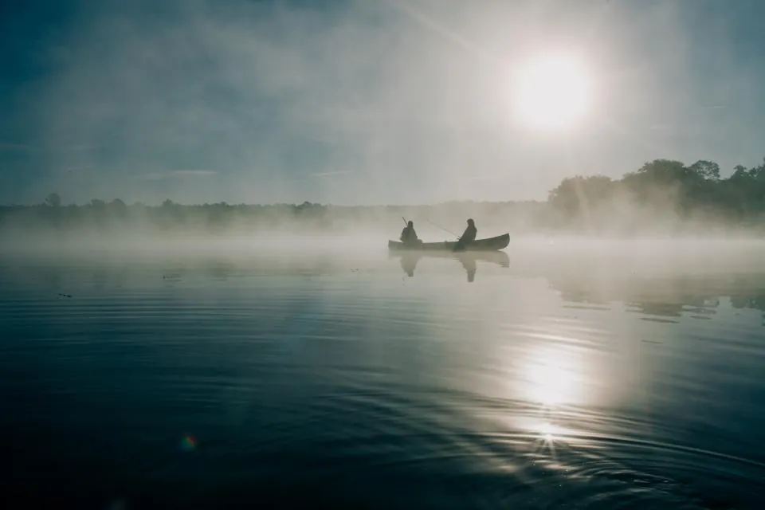

Mancing di Kali Belakang Rumah, Dapatnya Kunci Motor Tetangga
Enam jam duduk di pinggir kali, umpan habis tiga kantong, ikan nol besar. Yang nyangkut justru gantungan kunci motor Pak Hendra yang hilang dua tahun lalu — dan hidup saya di RW 04 berubah sejak hari itu.

Kali di belakang rumah saya lebarnya tidak sampai empat meter. Airnya kecokelatan, sedikit berbau kalau sore, dan satu-satunya penghuni yang pasti ada cuma keong. Tapi setiap orang yang pernah memegang joran tahu perasaan ini: selama ada air, selalu ada kemungkinan.
Sabtu itu saya bangun jam empat. Bukan karena rajin, tapi karena semalam saya sudah pamer di grup keluarga bahwa saya akan pulang bawa ikan. Kalimat yang saya kirim persis begini: “Besok gorengan ikan dari hasil sendiri, ya.” Ada yang membalas dengan jempol. Ibu saya membalas, “Jangan lupa bawa jaket.”
Kali yang tidak pernah masuk peta wisata
Saya berangkat dengan perlengkapan yang, harus saya akui, agak berlebihan untuk kali sekecil itu: satu joran baru yang saya beli online dengan diskon 40 persen, tiga kantong umpan, kotak kail, kursi lipat, dan termos berisi kopi tubruk yang saya bawa dengan rasa bangga tidak wajar.
Jam lima lebih sedikit, langit masih setengah gelap. Kabut tipis menempel di permukaan air. Untuk sekitar tiga menit, saya merasa seperti tokoh dalam film dokumenter alam. Menit keempat, kaki saya digigit sesuatu dan ilusi itu bubar.
Enam jam, tiga kantong umpan, nol ikan
Jam enam: tidak ada apa-apa. Jam tujuh: umpan pertama habis, entah dimakan siapa. Jam delapan: seekor capung hinggap di ujung joran dan itu adalah kejadian paling menarik dalam dua jam terakhir. Jam sembilan, tetangga saya, Pak Hendra, lewat sambil menggendong cucunya.
“Dapat apa, Mas?”
Pertanyaan yang, bagi pemancing, setara dengan ditanya kapan lulus. Saya jawab sekenanya: “Belum rezeki, Pak.” Beliau mengangguk penuh pengertian, lalu berkata sesuatu yang baru saya pahami beberapa jam kemudian: “Kali ini memang suka nyimpen barang.”
Setiap pemancing sebetulnya tidak sedang menunggu ikan. Dia sedang menunggu alasan untuk duduk diam tanpa merasa bersalah.
Jam sebelas saya sudah pindah tiga titik. Umpan kedua habis. Saya mulai melakukan hal yang dilakukan semua pemancing gagal: menyalahkan cuaca, lalu menyalahkan merek umpan, lalu menyalahkan diri sendiri karena tidak membawa umpan yang berbeda.
Yang nyangkut bukan ikan
Jam setengah dua belas, senar saya tersangkut. Saya sudah hafal rasanya: tersangkut akar itu berat dan mati, tersangkut plastik itu ringan dan malas. Yang ini beda. Ada bunyi kecil, seperti logam bergesekan dengan batu.
Saya tarik pelan-pelan, sabar seperti orang yang tidak punya rencana lain di hari itu — dan memang tidak punya. Yang muncul ke permukaan adalah gumpalan lumpur sebesar kepalan tangan. Di dalamnya, gantungan kunci berbentuk tokoh kartun yang catnya sudah hilang separuh, dengan dua kunci motor masih menempel.
Saya bawa pulang, saya cuci di keran depan rumah, dan saya pandangi cukup lama. Bentuk gantungannya tidak asing. Saya pernah melihatnya bergantung di kunci motor bebek merah yang tiap subuh dipakai ke pasar.
Lima belas menit kemudian saya sudah berdiri di depan rumah Pak Hendra dengan kunci di tangan, merasa seperti orang yang membawa kabar penting sekaligus tidak masuk akal.
Ternyata ceritanya begini: dua tahun lalu, cucunya yang waktu itu berumur empat tahun sempat bermain di dekat kali sambil memegang kunci itu. Motornya sudah lama dijual karena kuncinya hilang dan biaya bikin baru dianggap tidak sepadan. Yang bikin beliau lama diam bukan soal motornya. Gantungan itu hadiah terakhir dari almarhumah istrinya.
Opor tiap Minggu dan pelajaran soal sabar
Sejak hari itu, tiap Minggu ada rantang datang ke rumah saya. Kadang opor, kadang sayur lodeh, sekali pernah rendang yang saya makan sambil menahan diri untuk tidak menangis. Saya sudah bilang tidak perlu. Jawaban Pak Hendra selalu sama: “Ini bukan buat kamu, ini buat kalinya.” Saya tidak paham logikanya, tapi saya tidak berani membantah orang yang membawa rendang.
Saya masih belum pernah dapat ikan di kali itu. Sudah tujuh kali percobaan, hasilnya: satu gantungan kunci, dua sandal jepit tidak sepasang, satu mainan mobil, dan sekitar dua belas jam duduk diam yang ternyata saya butuhkan lebih dari yang saya sadari.
Grup keluarga saya sampai sekarang masih menunggu gorengan ikan itu. Saya bilang, sabar. Namanya juga mancing.